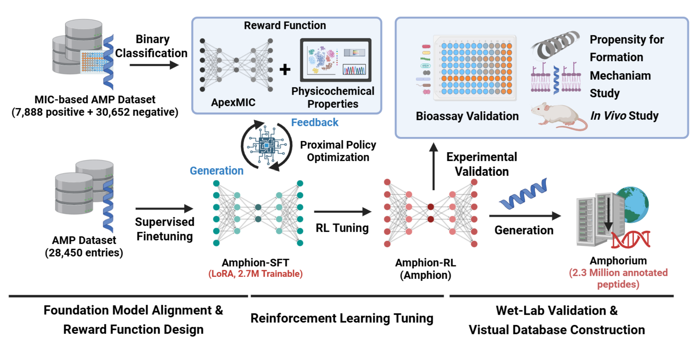
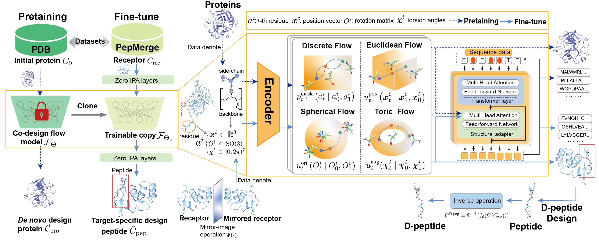
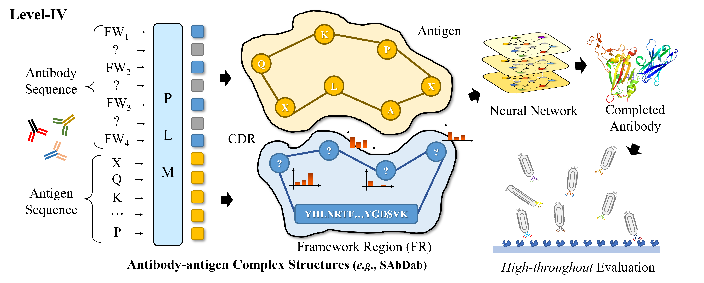
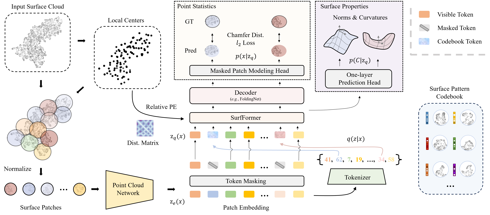
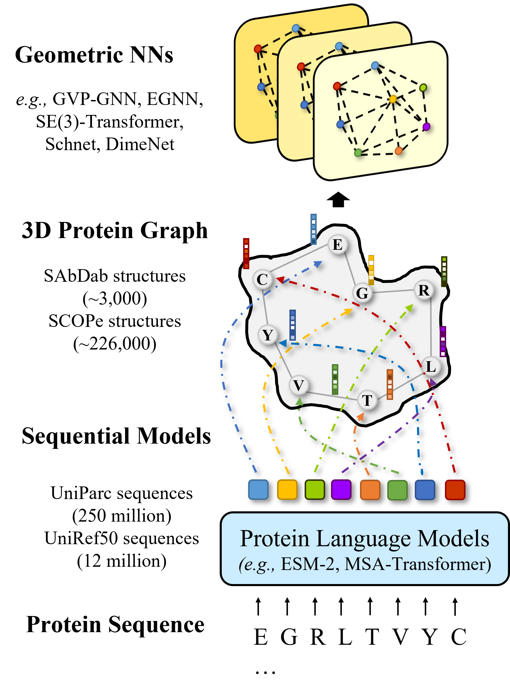
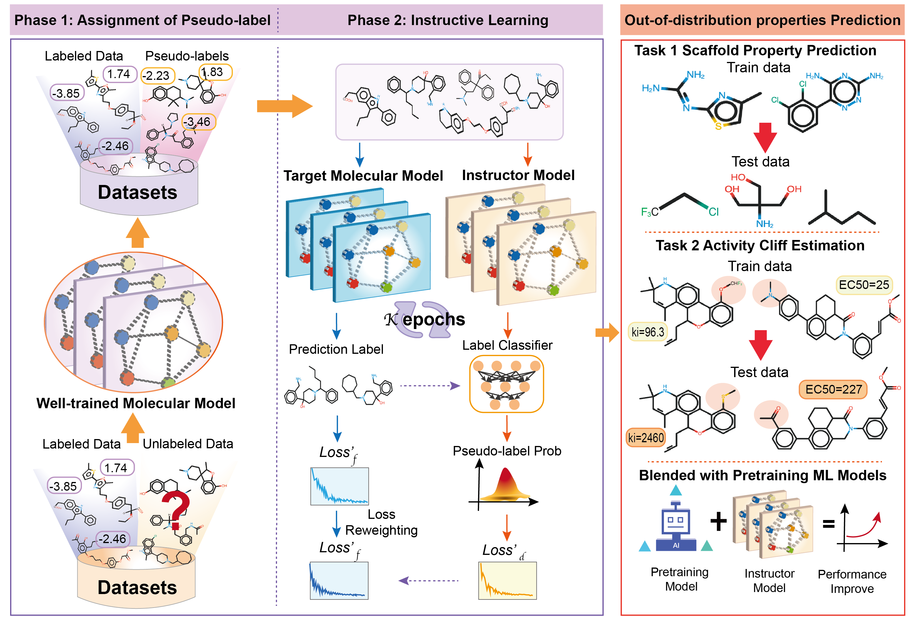
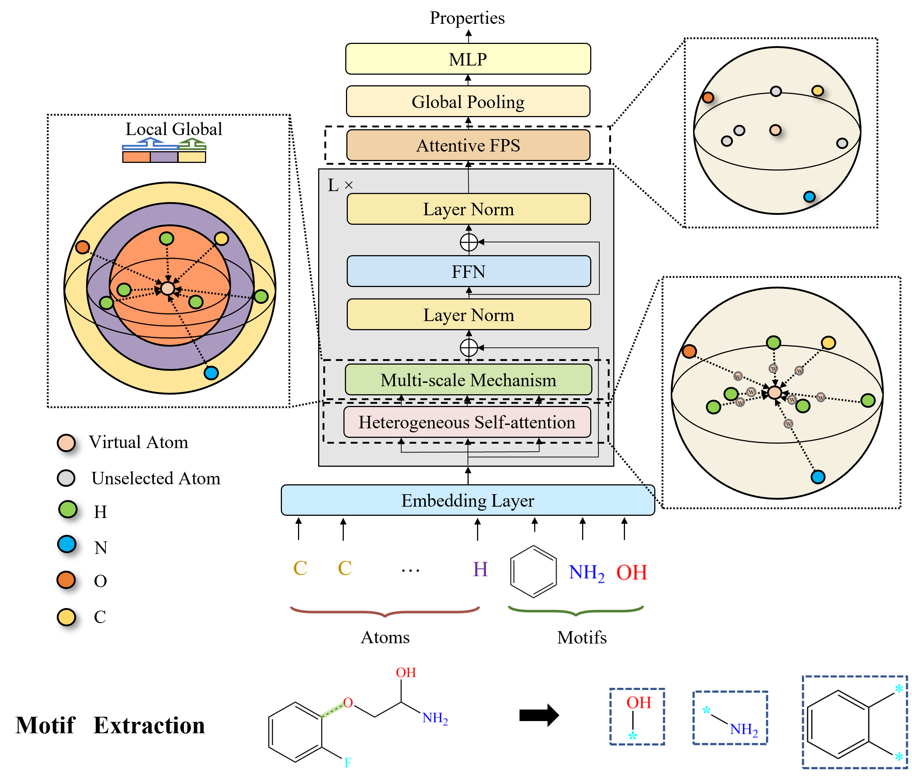
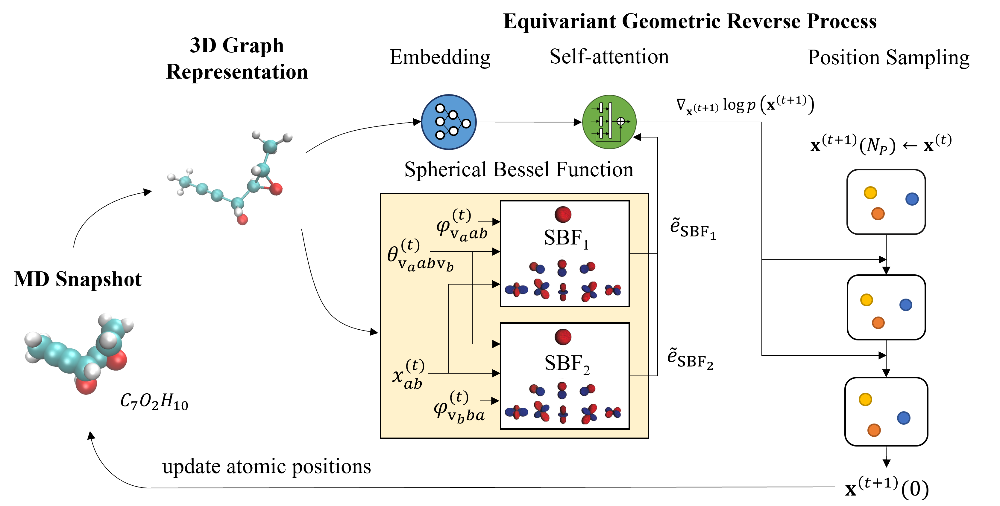

A Deep Reinforcement Learning Platform for Antibiotic Discovery.

Hanqun Cao, Marcelo D. T. Torres, Jingjie Zhang, Zijun Gao, Fang Wu, Chunbin Gu, Jure Leskovec, Yejin Choi,
Cesar de la Fuente-Nunez, Guangyong Chen, Pheng-Ann Heng†
Under Review
[Paper]
[Code]
Joint Design of Protein Surface and Structure Using a Diffusion Bridge Model.

Guanlue Li, Xufeng Zhao, Fang Wu,† , Soren Laue†
NeurIPS 2025
[Paper]
[Code]

D-Flow: Multi-modality Flow Matching for D-peptide Design.

Fang Wu*, Tinson Xu*, Shuting Jin*, Xiangru Tang, Zerui Xu, James Zou, Brian Hie†
NeurIPS 2025 AI4D3 Workshop
[Paper]
[Code]
 SurfDesign: Effective Protein Design on Molecular Surfaces.
SurfDesign: Effective Protein Design on Molecular Surfaces.
Fang Wu, Shuting Jin, Jianmin Wang, Zerui Xu, xiangxiang Zeng, Jinbo Xu†
Under review
[Paper]
[Code]
 BC-Design: A Biochemistry-Aware Framework for High-Precision Inverse Protein Folding.
BC-Design: A Biochemistry-Aware Framework for High-Precision Inverse Protein Folding.

Xiangru Tang*, Xinwu Ye*, Fang Wu*, Yanjun Shao, Yin Fang, Siming Chen, Dong Xu, Mark Gerstein†
ICML 2025 GenBio Workshop
[Paper]
[Code]
Surface-based Peptide Design with Multi-modal Flow Matching.
Fang Wu*, Shuting Jin, Zhengyuan Zhou, Xiangxiang Zeng, Jure Leskovec, Jinbo Xu†
KDD 2025
[Paper]
 A Survey of Generative AI for de novo Drug Design: New Frontiers in Molecule and Protein Generation.
A Survey of Generative AI for de novo Drug Design: New Frontiers in Molecule and Protein Generation.

Xiangru Tang*, Howard Dai*, Elizabeth Knight*, Fang Wu,, Yunyang Li, Tianxiao Li, Mark Gerstein†
Briefings in Bioinformatics (2024)
[Paper]
[Github Repo.]

A Hierarchical Training Paradigm for Antibody Structure-sequence Co-design
Fang Wu, Stan Z. Li†
NeurIPS 2023
[Paper]
PoseX: AI Defeats Physics Approaches on Protein-Ligand Cross Docking.

Yize Jiang*, Xinze Li*, Yuanyuan Zhang*, Jin Han*, Youjun Xu*, Ayush Pandit, Zaixi Zhang, Mengdi Wang, Mengyang Wang, Chong Liu, Guang Yang, Yejin Choi, WuJun Li†, Tianfan Fu†, Fang Wu†, Junhong Liu†
NeurIPS 2025
[Paper]
[Code]
[Webpage]
StaB-ddG: Predicting mutational effects on protein binding from folding energy.

Arthur Deng, Karsten D. Householder, Fang Wu, Sebastian Thrun, K. Christopher Garcia, Brian L. Trippe†
ICML 2025
[Paper]
[Code]
Dynamics-inspired Structure Hallucination for Protein-protein Interaction Modeling.

Fang Wu, Stan Z. Li†
TMLR (2025) → ICLR 2026 (Journal-to-Conference Track)
[Paper]
[Code]
 Interformer: An Interaction-Aware Model for Protein-Ligand Docking and Affinity Prediction.
Interformer: An Interaction-Aware Model for Protein-Ligand Docking and Affinity Prediction.

Houtim Lai†, Longyue Wang†, Ruiyuan Qian, Juhong Huang, Peng Zhou, Geyan Ye, Fandi Wu, Fang Wu, Xiangxiang Zeng, Wei Liu
Nature Communications (2024)
[Paper]
[Code]

Surface-VQMAE: Vector-quantized Masked Auto-encoders on Molecular Surfaces.

Fang Wu, Stan Z. Li†
ICML 2024
[Paper]
[Code]

Integration of Pre-trained Protein Language Mdels into Geometric Deep Learning Networks.

Fang Wu, Liong Wu, Dragomir Radev, Jinbo Xu, Stan Z. Li†
Communications Biology (2023)
[Paper]
[Code]

Instructor-inspired Machine Learning for Robust Molecular Property Prediction.

Fang Wu*†, Shuting Jin*, Siyuan Li, Stan Z. Li
NeurIPS 2024
[Paper]
[Code]
 A Semi-supervised Molecular Learning Framework for Activity Cliff Estimation.
A Semi-supervised Molecular Learning Framework for Activity Cliff Estimation.
Fang Wu†
IJCAI 2024
[Paper]
[Code]
 Metric Learning-enhanced Optimal Transport for Biochemical Regression Domain Adaptation
Metric Learning-enhanced Optimal Transport for Biochemical Regression Domain Adaptation

Fang Wu*, Nicolas Courty*, Shuting Jin*, Stan Z. Li†
Patterns (2023)
[Paper]
[Code]

Molformer: Motif-based Transformer on 3D Heterogeneous Molecular Graphs.

Fang Wu, Dragomir Radev, Stan Z. Li†
AAAI 2023
[Paper]
[Code]
Generalized Implicit Neural Representations for Dynamic Molecular Surface Modeling.
Fang Wu, Bozhen Hu, Stan Z. Li†
AAAI 2025
[Paper]

DiffMD: A Geometric Diffusion Model for Molecular Dynamics Simulations
Fang Wu, Stan Z. Li†
AAAI 2023 (Oral)
[Paper]
 Pretraining of Equivariant Graph Matching Networks with Conformation Flexibility for Drug Binding
Pretraining of Equivariant Graph Matching Networks with Conformation Flexibility for Drug Binding

Fang Wu*, Shuting Jin*, Yinghui Jiang*, Xurui Jin, Bowen Tang, Zhangming Niu, Qiang Zhang, Xiangxiang Zeng, Stan Z. Li†
Advanced Science (2022)
[Paper]
[Code]
 L2M3OF: A Large Language Multimodal Model for Metal-Organic Frameworks.
L2M3OF: A Large Language Multimodal Model for Metal-Organic Frameworks.

Jiyu Cui*, Fang Wu*, Haokai Zhao*, Minggao Feng, Xenophon Evangelopoulos, Andrew I. Cooper†, Yejin Choi†
Under Review
[Paper]
[Code]
 Direct Prediction of Gas Adsorption via Spatial Atom Interaction Learning.
Direct Prediction of Gas Adsorption via Spatial Atom Interaction Learning.

Jiyu Cui*, Fang Wu*, Wen Zhang*, Lifeng Yang*, Jianbo Hu, Yin Fang, Peng Ye, Qiang Zhang, Xian Suo, Yiming Mo, Xili Cui, Huajun Chen†, Huabin Xing†
Nature Communications (2023)
[Paper]
[Code]
 InsertGNN: A Hierarchical Graph Neural Network for the TOEFL Sentence Insertion Problem
InsertGNN: A Hierarchical Graph Neural Network for the TOEFL Sentence Insertion Problem

 Discovering and Explaining the Representation Bottleneck of Graph Neural Networks from Multi-order Interactions
Discovering and Explaining the Representation Bottleneck of Graph Neural Networks from Multi-order Interactions